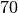
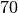

In [1]:
# Set up matplotlib and use a nicer set of plot parameters
from astropy.visualization import astropy_mpl_style
import matplotlib.pyplot as plt
plt.style.use(astropy_mpl_style)
%matplotlib inline
Make a plot with both redshift and universe age axes using astropy.cosmology¶
Each redshift corresponds to an age of the universe, so if you’re
plotting some quantity against redshift, it’s often useful show the
universe age too. The relationship between the two changes depending the
type of cosmology you assume, which is where astropy.cosmology comes
in. In this tutorial we’ll show how to use the tools in
astropy.cosmology to make a plot like this:
In [2]:
from IPython.display import Image
Image(filename="ang_dist.png", width=500)
Out[2]:

We start with a cosmology object. We will make a flat cosmology (which
means that the curvature density  ) with a hubble
parameter of  km/s/Mpc and matter density
) with a hubble
parameter of  km/s/Mpc and matter density  at redshift 0. The
at redshift 0. The FlatLambdaCDM cosmology then automatically infers
that the dark energy density  must
must  ,
because
,
because  .
.
In [3]:
from astropy.cosmology import FlatLambdaCDM
# In this case we just need to define the matter density
# and hubble parameter at z=0.
# Note the default units for the hubble parameter H0 are km/s/Mpc.
# You can also pass an astropy `Quantity` with the units specified.
cosmo = FlatLambdaCDM(H0=70, Om0=0.3)
Note that we could instead use one of the built-in cosmologies, like
WMAP9 or Planck13, in which case we would just redefine the
cosmo variable.
Now we need an example quantity to plot versus redshift. Let’s use the angular diameter distance, which is the physical transverse distance (the size of a galaxy, say) corresponding to a fixed angular separation on the sky. To calculate the angular diameter distance for a range of redshifts:
In [4]:
import numpy as np
zvals = np.arange(0, 6, 0.1)
dist = cosmo.angular_diameter_distance(zvals)
---------------------------------------------------------------------------
ModuleNotFoundError Traceback (most recent call last)
<ipython-input-4-5c45e1ec484b> in <module>()
1 import numpy as np
2 zvals = np.arange(0, 6, 0.1)
----> 3 dist = cosmo.angular_diameter_distance(zvals)
~/anaconda/envs/tutorials-dev/lib/python3.6/site-packages/astropy/cosmology/core.py in angular_diameter_distance(self, z)
1255 z = np.asarray(z)
1256
-> 1257 return self.comoving_transverse_distance(z) / (1. + z)
1258
1259 def luminosity_distance(self, z):
~/anaconda/envs/tutorials-dev/lib/python3.6/site-packages/astropy/cosmology/core.py in comoving_transverse_distance(self, z)
1192 """
1193
-> 1194 return self._comoving_transverse_distance_z1z2(0, z)
1195
1196 def _comoving_transverse_distance_z1z2(self, z1, z2):
~/anaconda/envs/tutorials-dev/lib/python3.6/site-packages/astropy/cosmology/core.py in _comoving_transverse_distance_z1z2(self, z1, z2)
1221
1222 Ok0 = self._Ok0
-> 1223 dc = self._comoving_distance_z1z2(z1, z2)
1224 if Ok0 == 0:
1225 return dc
~/anaconda/envs/tutorials-dev/lib/python3.6/site-packages/astropy/cosmology/core.py in _comoving_distance_z1z2(self, z1, z2)
1163 """
1164
-> 1165 from scipy.integrate import quad
1166 f = lambda z1, z2: quad(self._inv_efunc_scalar, z1, z2,
1167 args=self._inv_efunc_scalar_args)[0]
ModuleNotFoundError: No module named 'scipy'
Note that we passed an array of redshifts to
cosmo.angular_diameter_distance and it produced a corresponding
array of distance values, one for each redshift. Let’s plot them:
In [5]:
plt.rc('xtick.major', size=4)
plt.rc('ytick.major', size=4)
plt.rc('xtick.minor', size=2)
plt.rc('ytick.minor', size=2)
plt.rc('axes', grid=False)
plt.rc('xtick.major', width=1)
plt.rc('xtick.minor', width=1)
plt.rc('ytick.major', width=1)
plt.rc('ytick.minor', width=1)
plt.rc('lines', marker='')
fig = plt.figure(figsize=(6,4))
ax = fig.add_subplot(111)
ax.plot(zvals, dist);
---------------------------------------------------------------------------
NameError Traceback (most recent call last)
<ipython-input-5-4a79e3012f8c> in <module>()
12 fig = plt.figure(figsize=(6,4))
13 ax = fig.add_subplot(111)
---> 14 ax.plot(zvals, dist);
NameError: name 'dist' is not defined

To check the units of the angular diameter distance, take a look at the unit attribute:
In [6]:
dist.unit
---------------------------------------------------------------------------
NameError Traceback (most recent call last)
<ipython-input-6-41b435a9b711> in <module>()
----> 1 dist.unit
NameError: name 'dist' is not defined
Now let’s put some age labels on the top axis. We’re going to pick a series of round age values where we want to place axis ticks. You may need to tweak these depending on your redshift range to get nice, evenly spaced ticks.
In [7]:
import astropy.units as u
ages = np.array([13, 10, 8, 6, 5, 4, 3, 2, 1.5, 1.2, 1])*u.Gyr
To link the redshift and age axes, we have to find the redshift
corresponding to each age. The function z_at_value does this for us.
In [8]:
from astropy.cosmology import z_at_value
ageticks = [z_at_value(cosmo.age, age) for age in ages]
---------------------------------------------------------------------------
ModuleNotFoundError Traceback (most recent call last)
<ipython-input-8-6c9b7e5a067f> in <module>()
1 from astropy.cosmology import z_at_value
----> 2 ageticks = [z_at_value(cosmo.age, age) for age in ages]
<ipython-input-8-6c9b7e5a067f> in <listcomp>(.0)
1 from astropy.cosmology import z_at_value
----> 2 ageticks = [z_at_value(cosmo.age, age) for age in ages]
~/anaconda/envs/tutorials-dev/lib/python3.6/site-packages/astropy/cosmology/funcs.py in z_at_value(func, fval, zmin, zmax, ztol, maxfun)
114 universes, but not in closed universes.
115 """
--> 116 from scipy.optimize import fminbound
117
118 fval_zmin = func(zmin)
ModuleNotFoundError: No module named 'scipy'
Now we make the second axes, and set the tick positions using these values.
In [9]:
fig = plt.figure(figsize=(6,4))
ax = fig.add_subplot(111)
ax.plot(zvals, dist)
ax2 = ax.twiny()
ax2.set_xticks(ageticks);
---------------------------------------------------------------------------
NameError Traceback (most recent call last)
<ipython-input-9-097b4accfb69> in <module>()
1 fig = plt.figure(figsize=(6,4))
2 ax = fig.add_subplot(111)
----> 3 ax.plot(zvals, dist)
4 ax2 = ax.twiny()
5 ax2.set_xticks(ageticks);
NameError: name 'dist' is not defined

We have ticks on the top axis at the correct ages, but they’re labelled with the redshift, not the age. Fix this by setting the tick labels by hand.
In [10]:
fig = plt.figure(figsize=(6,4))
ax = fig.add_subplot(111)
ax.plot(zvals, dist)
ax2 = ax.twiny()
ax2.set_xticks(ageticks)
ax2.set_xticklabels(['{:g}'.format(age) for age in ages.value]);
---------------------------------------------------------------------------
NameError Traceback (most recent call last)
<ipython-input-10-4d247180f488> in <module>()
1 fig = plt.figure(figsize=(6,4))
2 ax = fig.add_subplot(111)
----> 3 ax.plot(zvals, dist)
4 ax2 = ax.twiny()
5 ax2.set_xticks(ageticks)
NameError: name 'dist' is not defined

We need to make sure the top and bottom axes have the same redshift limits. They may not line up properly in the above plot, for example, depending on your setup (the age of the universe should be ~13 Gyr at z=0).
In [11]:
fig = plt.figure(figsize=(6,4))
ax = fig.add_subplot(111)
ax.plot(zvals, dist)
ax2 = ax.twiny()
ax2.set_xticks(ageticks)
ax2.set_xticklabels(['{:g}'.format(age) for age in ages.value])
zmin, zmax = 0.0, 5.9
ax.set_xlim(zmin, zmax)
ax2.set_xlim(zmin, zmax);
---------------------------------------------------------------------------
NameError Traceback (most recent call last)
<ipython-input-11-95a4f0dd6cef> in <module>()
1 fig = plt.figure(figsize=(6,4))
2 ax = fig.add_subplot(111)
----> 3 ax.plot(zvals, dist)
4 ax2 = ax.twiny()
5 ax2.set_xticks(ageticks)
NameError: name 'dist' is not defined

We’re almost done. We just need to label all the axes, and add some minor ticks. Let’s also tweak the y axis limits to avoid putting labels right near the top of the plot.
In [12]:
fig = plt.figure(figsize=(6,4))
ax = fig.add_subplot(111)
ax.plot(zvals, dist)
ax2 = ax.twiny()
ax2.set_xticks(ageticks)
ax2.set_xticklabels(['{:g}'.format(age) for age in ages.value])
zmin, zmax = 0, 5.9
ax.set_xlim(zmin, zmax)
ax2.set_xlim(zmin, zmax)
ax2.set_xlabel('Time since Big Bang (Gyr)')
ax.set_xlabel('Redshift')
ax.set_ylabel('Angular diameter distance (Mpc)')
ax.set_ylim(0, 1890)
ax.minorticks_on()
---------------------------------------------------------------------------
NameError Traceback (most recent call last)
<ipython-input-12-2392126eb877> in <module>()
1 fig = plt.figure(figsize=(6,4))
2 ax = fig.add_subplot(111)
----> 3 ax.plot(zvals, dist)
4 ax2 = ax.twiny()
5 ax2.set_xticks(ageticks)
NameError: name 'dist' is not defined

Now for comparison, let’s add the angular diameter distance for a different cosmology, from the Planck 2013 results. And then finally, we save the figure to a png file.
In [13]:
from astropy.cosmology import Planck13
dist2 = Planck13.angular_diameter_distance(zvals)
fig = plt.figure(figsize=(6,4))
ax = fig.add_subplot(111)
ax.plot(zvals, dist2, label='Planck 2013')
ax.plot(zvals, dist, label=
'$h=0.7,\ \Omega_M=0.3,\ \Omega_\Lambda=0.7$')
ax.legend(frameon=0, loc='lower right')
ax2 = ax.twiny()
ax2.set_xticks(ageticks)
ax2.set_xticklabels(['{:g}'.format(age) for age in ages.value])
zmin, zmax = 0.0, 5.9
ax.set_xlim(zmin, zmax)
ax2.set_xlim(zmin, zmax)
ax2.set_xlabel('Time since Big Bang (Gyr)')
ax.set_xlabel('Redshift')
ax.set_ylabel('Angular diameter distance (Mpc)')
ax.minorticks_on()
ax.set_ylim(0, 1890)
fig.savefig('ang_dist.png', dpi=200, bbox_inches='tight')
---------------------------------------------------------------------------
ModuleNotFoundError Traceback (most recent call last)
<ipython-input-13-ff090b2a6a29> in <module>()
1 from astropy.cosmology import Planck13
----> 2 dist2 = Planck13.angular_diameter_distance(zvals)
3
4 fig = plt.figure(figsize=(6,4))
5 ax = fig.add_subplot(111)
~/anaconda/envs/tutorials-dev/lib/python3.6/site-packages/astropy/cosmology/core.py in angular_diameter_distance(self, z)
1255 z = np.asarray(z)
1256
-> 1257 return self.comoving_transverse_distance(z) / (1. + z)
1258
1259 def luminosity_distance(self, z):
~/anaconda/envs/tutorials-dev/lib/python3.6/site-packages/astropy/cosmology/core.py in comoving_transverse_distance(self, z)
1192 """
1193
-> 1194 return self._comoving_transverse_distance_z1z2(0, z)
1195
1196 def _comoving_transverse_distance_z1z2(self, z1, z2):
~/anaconda/envs/tutorials-dev/lib/python3.6/site-packages/astropy/cosmology/core.py in _comoving_transverse_distance_z1z2(self, z1, z2)
1221
1222 Ok0 = self._Ok0
-> 1223 dc = self._comoving_distance_z1z2(z1, z2)
1224 if Ok0 == 0:
1225 return dc
~/anaconda/envs/tutorials-dev/lib/python3.6/site-packages/astropy/cosmology/core.py in _comoving_distance_z1z2(self, z1, z2)
1163 """
1164
-> 1165 from scipy.integrate import quad
1166 f = lambda z1, z2: quad(self._inv_efunc_scalar, z1, z2,
1167 args=self._inv_efunc_scalar_args)[0]
ModuleNotFoundError: No module named 'scipy'
bbox_inches='tight' automatically trims any whitespace from around
the plot edges.
And we’re done!
Exercise¶
Well, almost done. Notice that we calculated the times on the upper axis using the original cosmology, not the new cosmology based on the Planck 2013 results. So strictly speaking, this axis applies only to the original cosmology, although the difference between the two is small. As an exercise, you can try plot two different upper axes, slightly offset from each other, to show the times corresponding to each cosmology. Take a look at the first answer to this question on Stack Overflow for some hints on how to go about this.
In [14]: